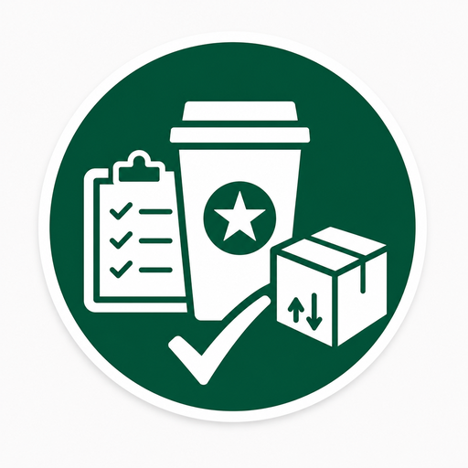

Back of House · Control visual
Estandar Max&Min
Selecciona tienda, define estación, carga foto ANTES, foto DESPUÉS y genera tu PDF.

Guía rápida
Flujo simple
Captura operativa
Datos de evidencia
Fecha automática--
PDF final
Descarga y sube tu evidencia
Cuando termines, descarga tu PDF y súbelo a la carpeta de seguimiento.
Cuando termines, descarga tu PDF y súbelo a la carpeta de seguimiento.
Abrir carpeta de carga